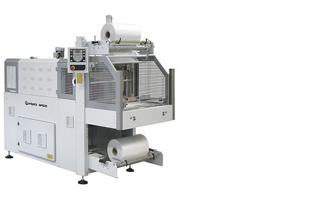
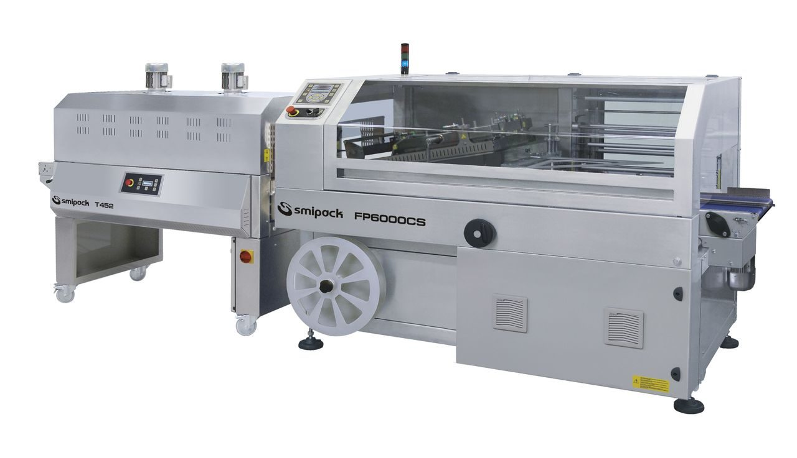
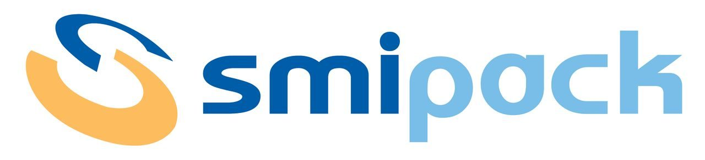

SMIPACK
Термоусадочное оборудование
Оборудование SMIPACK для упаковки в термоусадочную плёнку. В ассортименте ручные, полуавтоматические и автоматические машины, запайщики и термотуннели.
- Термоусадочная плёнка
- Запайщики и термотуннели
Фотографии и схемы




Описание и комплектация
SMIPACK S.p.A., основанная в 1997 году, является дочерней компанией SMIGROUP, специализирующейся на производстве и маркетинге: вытяжных машин L-Seal; ручные, полуавтоматические и автоматические L-уплотнители: автоматические боковые уплотнители с прерывистым и коробочным движением; термоусадочный туннель; полуавтоматические и автоматические упаковщики в термоусадочную пленку и упаковочные термоусадочные машины; автоматические ручки-аппликаторы.
Машины SMIPACK подходят для нескольких сегментов рынка: продукты питания (хлебобулочные, кондитерские изделия, пицца, фрукты и овощи, молочные продукты, напитки и консервированные продукты), непищевые продукты (продукты для графической, электронной, механической и компьютерной промышленности, прачечная, игрушки, моющие средства, парфюмерия и фармацевтическая продукция), упаковка для третьих лиц и сетей супермаркетов.
Непрерывные инвестиции в исследования и разработки, новейшие технологии, использование высоконадежных компонентов, гибкость и техническая поддержка - все это ключевые факторы успешного продукта с отличным соотношением цена / качество.
Благодаря этой корпоративной политике SMIPACK имеет годовой объем производства 4500 единиц и входит в число мировых лидеров в своем секторе.
